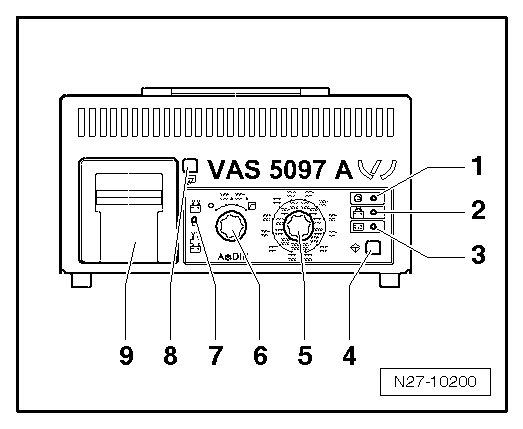

Battery Tester with Printer VAS 5097 A
Battery Tester with Printer VAS 5097 A
Battery Tester with Printer 5097 A (VAS 5097 A)

1 LED green, "Device in use"
2 LED red, "Device connected with terminals reversed"
3 LED red, "Battery cannot be tested", the battery must be replaced
4 Start button
5 Cold cranking output selector switch
6 ON/OFF function switch
7 Sliding switch (battery hook-up on battery/ at external test point in engine compartment)
8 Paper-feed button
9 Printer 00